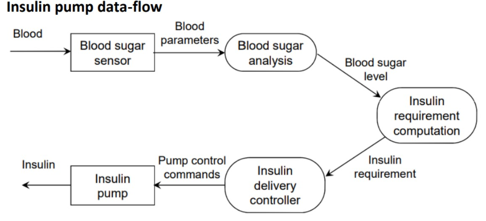

State and explain the emergent systems properties with example
- The complex relationships between the components in a system mean that a system
is more than simply the sum of its parts. It has properties that are properties of the
system as a whole. These ‘emergent properties’ cannot be attributed to any specific part of
the system. Rather, they only emerge once the system components have been integrated.
Some of these properties, such as weight, can be derived directly from the comparable properties of subsystems. More often, however, they result from complex subsystem interrelationships. - types of emergent system properties
- functional ESP -
when the purpose of a system only emerges after its components are integrated. For example, a bicycle has the functional property of being a transportation device once it has been assembled from its components. - non functional ESP -
which relate to the behavior of the system in its operational environment. Reliability, performance, safety, and security are examples of emergent properties. These are critical for computer-based systems, as failure to achieve a minimum defined level in these properties usually makes the system unusable. Some users may not need some of the system functions, so the system may be acceptable without them. However, a system that is unreliable or too slow is likely to be rejected by all its users.
property description Volume The volume of a system (the total space occupied) varies depending on how the component assemblies are arranged and connected Reliability System reliability depends on component reliability but unexpected interactions can cause new types of faliures and theefore affect the reliability of the system Security The security of the system (it's ability to resist attack) is a complex property that cannot be easily measured. Attacks may be devised that were not anticipated by tge system designers and so may defeat built-in safeguards Repairability This property reflects how easy it is to fix a problem with the system once it has been discovered. It depends on being able to diagnose the problem, access the components that are faulty, and modify or replace these components Usability This property reflects how easy it is to use the system. It depends on the technical syatem components, its operators, and its operating environment.
System reliability is a good example of an emergent property. Because of component interdependencies, faults can be propagated through the system. System failures often occur because of unforeseen inter-relationships between components. It is practically impossible to anticipate all possible component relationships. Software reliability measures may give a false picture of the overall system reliability.
- influence on reliability
- hardware reliability - what is the probability of a hardware component failing & how long does it take to repair
- software reliability - how likely it is that a software component will produce an incorrect output. Software failure is usually distinct from hardware failure in that software does not wear out.
- operator reliability - how likely is it for the operator of a system to make an error
Explain the legacy system with the help of diagram.
Legacy systems are sociotechnical computer-based systems that have been developed in the past,
often using older or obsolete technology. These systems include not only hardware and software
but also legacy processes and procedures—old ways of doing things that are difficult to change
because they rely on legacy software. Changes to one part of the system inevitably involve
changes to other components.
Legacy systems are often business-critical systems. They are maintained because it is too risky
to replace them.

Legacy system components
- System Hardware – In many cases legacy systems have been written for mainframe hardware that is no longer available that is expensive to maintain and that may not be compatible with current organizational IT purchasing policies.
- Support Software - The legacy system may rely on range of support software from the operating system and utilities provided by the hardware manufacturer through to the compilers used for system development.
- Application software - The application system that provides the business services is usually composed of a number of separate programs that have been developed at different times.
- Application data - These are the data that are processed by the application system. In many legacy systems, an immense volume of data has accumulated over the lifetime of the system. This data may be inconsistent and may be duplicated in several files.
- Business processes - These are processes that are used in the business to achieve some business objective. An example of a business process in an insurance company would be issuing an insurance policy; in a manufacturing company a business process would be accepting all order for products and setting up the associated manufacturing process.
- Business policies and rules - These are definitions of how the business should be carried out and constraints on the business. Use of the legacy application system may be embedded in these policies and rules.
Explain safety critical system with the help of diagram
Safety-critical systems are those systems whose failure could result in loss of life, significant
property damage or damage to the environment. There are many well-known examples in
application areas such as medical devices, aircraft flight control, weapons and nuclear systems.
Example of simple safety critical system (An insulin pump control system)
Diabetes is a relatively common condition where the human pancreas is unable to produce
sufficient quantities of a hormone called insulin. Insulin metabolizes glucose (sugar) in the
blood. The conventional treatment of diabetes involves regular injections of genetically
engineered insulin. Diabetics measure their blood sugar levels using an external meter and then
calculate the dose of insulin that they should inject.
The problem with this treatment is that the level of insulin required does not just
depend on the blood glucose level but also on the time of the last insulin injection. This can
lead to very low levels of blood glucose (if there is too much insulin) or very high levels of
blood sugar (if there is too little insulin). That causes the serious problem to the human body.
Current advances in developing miniaturized sensors have meant that it is now
possible to develop automated insulin delivery systems. These systems monitor blood sugar
levels and deliver an appropriate dose of insulin when required. A software-controlled insulin
delivery system might work by using a micro-sensor embedded in the patient to measure some
blood parameter that is proportional to the sugar level. This is then sent to the pump controller.
This controller computes the sugar level and the amount of insulin that is needed. It then sends
signals to a miniaturized pump to deliver the insulin via a permanently attached needle.

Figure shown above is a UML activity model that illustrates how the software transforms an
input blood sugar level to a sequence of commands that drive the insulin pump.
Clearly, this is a safety-critical system. If the pump fails to operate or does not operate correctly,
then the user’s health may be damaged or they may fall into a coma because their blood sugar
levels are too high or too low. There are therefore two essentials high-level requirements that this
system must meet:
- The system shall be available to deliver insulin when required.
- The system shall perform reliably and deliver the correct amount of insulin to counteract the current level of blood sugar.
Failure of the system could in principle cause excessive doses of insulin to be delivered and this could threaten the life of the user. It is particularly important that overdoses of insulin should not occur.
Explain about safety and security of system systems
- Safety :
Safety critical systems are systems where it is essential that system operation is always safe. That is the system should never damage people or the system’s environment even if the system fails. Examples of safety critical system are control and monitoring systems in aircraft, process control systems in chemical and pharmaceutical plants and automobile control systems.
It is increasingly important to consider software safety as more and more devices incorporate software-based control systems. Safety requirements are exclusive requirements i.e., they exclude undesirable situations rather than specify required system services. Safety critical software are 2 types:
- Primary safety-critical systems - Embedded software systems whose failure can cause hardware malfunction which results inhuman injury or environmental damage.
- Secondary safety-critical systems - Systems whose failure indirectly results in injury. Eg - Medical Database holding details of drugs.
Safety terminology
Term Definition Accident (or mishap) An unplanned event Or sequence of events which results in human death or injury, damage to property or to the environment. A computer controlled machine injuring its operator is an example of an accident. Hazard A condition with the potential for causing or contributing to an accident. A failure of the sensor that detects an obstacle in front of a machine is an example of a hazard. Damage A measure of the loss resulting from a mishap. Damage can range from many people killed as a result of an accident or minor injury or property damage. Hazard severity An assessment of the worst possible damage that could result from a particular hazard.Hazard severity can range from catastrophe where many people are killed, to minor where only minor damage results. Hazard probability. The probability of the events occurring which create a hazard.Probability values tend to be arbitrary but range from probable, say one out of 100 chances of hazard occurring to implausible (no conceivable situations are likely where hazard could occur). Risk This is a measure of the probability that the system will cause an accident.The risk is assessed by considering the hazard probability.The Hazard severity and the probability that a hazard will result in accident.
ways to achieve safety
- Hazard avoidance
- The system is designed so that hazard simply cannot arise .
- E.g., Press 2 buttons at the same time in a cutting machine to start
- Hazard detection and removal
- The system is designed so that hazards are detected and removed before they result in an accident.
- E.g., Open relief valve on detection over pressure in chemical plant.
- Damage limitation
- The system includes protection features that minimise the damage that may result from an accident
- Automatic fire safety system in aircraft.
- Security :
Security is a system property that reflects the ability to protect itself from accidental or deliberate external attack. Security is becoming increasingly important as systems are networked so that external access to the system through the Internet is possible. Security is an essential prerequisite for availability, reliability and safety
Example: Viruses, unauthorised use of service/data modification.
security terminologyTerm Definition Exposure. Possible loss or harm in a computing system. This can be loss or damage to data, or can be loss of time and effort if recovery is necessary after a security breach. Vulnerability. A weakness in a computer based system that may be exploited to cause loss or harm. Attack. An exploitation of the system vulnerability. Generally this is from outside the system. Man is a deliberate attempt to cause some damage. Threats. Circumstances that have potential to cause loss or harm. You can think of these as a system vulnerability that is subjected to an attack. Control. A protective measure that reduces system vulnerability. Encryption would be an example of a control that reduced a vulnerability of a weak access control system.
Damage from insecurity.
- Denial of service - The system is forced into a state where normal services become unavailable.
- Corruption of programs or data - The system components of the system may alter in an unauthorised way, which affect system behaviour & hence its reliability and safety
- Disclosure of confidential information - Information that is managed by the system may be exposed to people who are not authorised to read or use that information
Security assurance.- Vulnerability avoidance - – The system is designed so that vulnerabilities do not occur. For example, if there is no external network connection then external attack is impossible
- Attack detection and elimination - The system is designed so that attacks on vulnerabilities are detected and remove them before they result in an exposure. For example, virus checkers find and remove viruses before they infect a system
- Exposure limitation - The consequences of a successful attack are minimised. For example, a backup policy allows damaged information to be restored